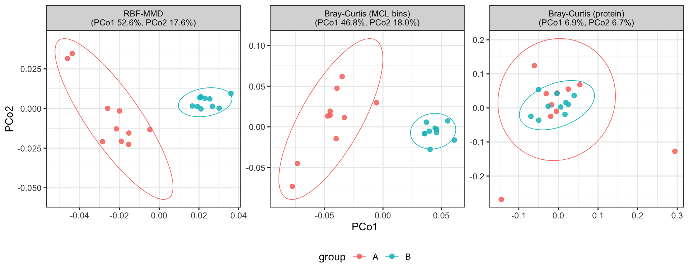

When different proteins contribute the same function, can a beta-diversity method tell two groups apart? Bray-Curtis compares samples through accession identity, so a functional shift spread across non-overlapping homologs is invisible to it by construction. This page builds exactly that case and runs three distances over it:
sample_mmd()).The first two read protein relatedness, each through a different lens; the third reads identity only.
library(repdist)
library(ggplot2)Ten CATH FunFams — functional families of structural domains — with
150 members each, embedded with TM-Vec. The membership table and
embeddings are validation/funfam_universe.rds on this
branch; validation/README.md describes their source and
validation/prepare_funfam_universe.R their reconstruction.
These coordinates come from the older scikit-bio/tmvec
head, not the current default, and their model revisions were not
recorded: they are a fixed example, not a reference for new
inference.
u <- readRDS(file.path("validation", "funfam_universe.rds"))
members <- u$members
x <- u$proteins
ids <- members$protein
table(members$label)
#>
#> ABC binding protein Dihydrolipoyl DH FtsH protease GAPDH
#> 150 150 150 150
#> LysR regulator MFS transporter PdxS synthase Ribosomal S12
#> 150 150 150 150
#> RuvC resolvase SHMT
#> 150 150Twenty samples, ten per group, and every sample contains every protein, so presence/absence carries no information and only abundance can be read. Each sample has ten proteins upregulated twenty-fold over lognormal baseline abundances:
Within each group the upregulated sets are disjoint, and group A never draws a protein group B uses, so no two samples share a single upregulated accession. Group B’s samples have nothing in common at the accession level and everything in common at the family level — the case an identity-based distance cannot see.
n_per_group <- 10L
n_up <- 10L
fold <- 20
depth <- 100000L
set.seed(20260901)
group <- factor(rep(c("A", "B"), each = n_per_group))
b_family <- members$family[members$label == "SHMT"][1]
# Disjoint, not merely independent: draw once, then cut into blocks.
draw_blocks <- function(pool) {
unname(split(
sample(pool, n_per_group * n_up), rep(seq_len(n_per_group), each = n_up)
))
}
up_B <- draw_blocks(ids[members$family == b_family])
up_A <- draw_blocks(setdiff(ids, unlist(up_B)))
up <- c(up_A, up_B)
w <- matrix(rlnorm(length(group) * length(ids), sdlog = 0.7),
nrow = length(group),
dimnames = list(sprintf("s%02d", seq_along(group)), ids)
)
for (i in seq_along(group)) w[i, up[[i]]] <- w[i, up[[i]]] * fold
counts <- t(apply(w, 1, function(x) rmultinom(1, depth, x)[, 1]))
c(
shared_upregulated_accessions = sum(duplicated(unlist(up))),
observed_in_every_sample = mean(colSums(counts > 0) == length(group))
)
#> shared_upregulated_accessions observed_in_every_sample
#> 0 1One similarity matrix feeds the bins:
protein_similarity() keeps every pair of proteins with a
predicted TM-score of at least 0.7, and an alignment covering half of
both sequences, as an edge, and bin_proteins() splits the
graph by Markov clustering (MCL) at inflation 2. The 0.7 is an edge
floor, not an all-pairs guarantee: a bin can hold pairs below it, joined
through shared neighbours. MMD builds its euclidean ground metric from
the same embeddings internally.
S <- protein_similarity(x, min_sim = 0.7)
b <- bin_proteins(S, inflation = 2)
binned <- bin_glom(counts, b)
sizes <- lengths(b$clusters)
c(b$graph, bins = length(sizes), largest_bin = max(sizes),
singleton_fraction = sum(sizes == 1) / sum(sizes))
#> proteins edges isolated components
#> 1500 111735 0 9
#> largest_component bins largest_bin singleton_fraction
#> 300 10 150 0The graph leaves no protein isolated and joins some families into shared components; MCL splits those again, and the ten families come back as 10 bins without ever being told there were ten.
Each sample is a weighted point cloud in embedding space: protein \(a\) enters with its relative abundance \(w_a\). For samples \(p\) and \(q\),
\[\mathrm{MMD}^2(p,q)\;=\;\sum_{a,b} w^p_a w^p_b\,k(a,b) \;-\;2\sum_{a,b} w^p_a w^q_b\,k(a,b) \;+\;\sum_{a,b} w^q_a w^q_b\,k(a,b),\]
under a Gaussian kernel on the euclidean ground metric, \(k(a,b)=\exp\!\left(-\lVert
z_a-z_b\rVert^2/2\sigma^2\right)\), which on the unit-norm rows
embed_proteins() returns is exactly \(\exp\!\left(-(1-\mathrm{TM}_{ab})/\sigma^2\right)\).
The middle term is the whole difference from Bray-Curtis. Two different proteins with \(k(a,b)\approx 1\) cancel there almost as completely as the same accession would. Shrink \(k\) to the indicator of \(a=b\) and the expression collapses to \(\lVert w^p - w^q\rVert^2\) — an identity-only distance, blind to any relationship between distinct proteins. That is the corner this simulation puts the protein-level baseline in by construction.
sigma defaults to the median pairwise distance among the
retained proteins, the usual median heuristic; the value actually used
comes back as attr(D, "sigma"), and passing it back holds
the bandwidth fixed across runs or studies.
D <- list(
`RBF-MMD` = sample_mmd(counts, x),
`Bray-Curtis (MCL bins)` = vegan::vegdist(binned, "bray"),
`Bray-Curtis (protein)` = vegan::vegdist(counts, "bray")
)md <- data.frame(group = group)
perma <- do.call(rbind, lapply(names(D), function(n) {
set.seed(1)
a <- vegan::adonis2(D[[n]] ~ group, data = md, permutations = 999)
data.frame(
distance = n, R2 = round(a$R2[1], 3),
F = round(a[["F"]][1], 2), p = a$`Pr(>F)`[1]
)
}))
knitr::kable(perma, row.names = FALSE)| distance | R2 | F | p |
|---|---|---|---|
| RBF-MMD | 0.470 | 15.99 | 0.001 |
| Bray-Curtis (MCL bins) | 0.461 | 15.41 | 0.001 |
| Bray-Curtis (protein) | 0.051 | 0.98 | 0.741 |
Both distances that can read protein relatedness — through the kernel or the bins — find the group difference decisively. Protein-level Bray-Curtis finds nothing: each sample’s upregulated set is private, so to an identity-based comparison every sample is equally unlike every other, in both groups.
PCoA on each distance, in the order above. The percentages in each panel heading are that axis’s share of the total variation, computed per distance because each has its own eigenvalues.
ord <- do.call(rbind, lapply(names(D), function(n) {
e <- cmdscale(D[[n]], k = 2, eig = TRUE)
rel <- 100 * e$eig / sum(e$eig[e$eig > 0]) # negative eigenvalues excluded
data.frame(
Axis1 = e$points[, 1], Axis2 = e$points[, 2], group = group,
panel = sprintf("%s\n(PCo1 %.1f%%, PCo2 %.1f%%)", n, rel[1], rel[2])
)
}))
ord$panel <- factor(ord$panel, unique(ord$panel))
ggplot(ord, aes(Axis1, Axis2, colour = group)) +
geom_point(size = 2, alpha = 0.85) +
stat_ellipse(type = "t", linewidth = 0.3) +
facet_wrap(~panel, nrow = 1, scales = "free") +
labs(x = "PCo1", y = "PCo2", colour = "group") +
theme_bw() +
theme(legend.position = "bottom")
In the first two panels group B collapses into a tight cluster away from group A, and the first axis — about half of the total variation — carries the separation. In the protein-level Bray-Curtis panel the two groups sit interleaved, and the leading axes hold a few percent each: the distance is near-constant across all pairs, within group and between.
The two structure-aware routes are not interchangeable in general — MMD weighs graded similarity through a kernel, the bins through a graph floor and MCL — but on a coherent functional shift they agree, and the conventional baseline is blind to it. When homologs rather than shared accessions carry a signal, the choice of representation is not a refinement; it is the difference between detecting the effect and missing it entirely.
sessionInfo()
#> R version 4.5.2 (2025-10-31)
#> Platform: aarch64-apple-darwin20
#> Running under: macOS 27.0.1
#>
#> Matrix products: default
#> BLAS: /System/Library/Frameworks/Accelerate.framework/Versions/A/Frameworks/vecLib.framework/Versions/A/libBLAS.dylib
#> LAPACK: /Library/Frameworks/R.framework/Versions/4.5-arm64/Resources/lib/libRlapack.dylib; LAPACK version 3.12.1
#>
#> locale:
#> [1] en_US/en_US/en_US/C/en_US/en_US
#>
#> time zone: America/New_York
#> tzcode source: internal
#>
#> attached base packages:
#> [1] stats graphics grDevices utils datasets methods base
#>
#> other attached packages:
#> [1] ggplot2_4.0.3 repdist_0.99.0
#>
#> loaded via a namespace (and not attached):
#> [1] sass_0.4.10 generics_0.1.4 lattice_0.22-9
#> [4] digest_0.6.39 magrittr_2.0.5 MCL_1.0
#> [7] evaluate_1.0.5 grid_4.5.2 RColorBrewer_1.1-3
#> [10] fastmap_1.2.0 jsonlite_2.0.0 Matrix_1.7-5
#> [13] mgcv_1.9-4 scales_1.4.0 permute_0.9-10
#> [16] Biostrings_2.78.0 codetools_0.2-20 jquerylib_0.1.4
#> [19] cli_3.6.6 rlang_1.3.0 crayon_1.5.3
#> [22] expm_1.0-0 XVector_0.50.0 splines_4.5.2
#> [25] withr_3.0.3 cachem_1.1.0 yaml_2.3.12
#> [28] otel_0.2.0 vegan_2.7-5 tools_4.5.2
#> [31] parallel_4.5.2 BiocParallel_1.44.0 dplyr_1.2.1
#> [34] BiocGenerics_0.56.0 vctrs_0.7.3 R6_2.6.1
#> [37] stats4_4.5.2 lifecycle_1.0.5 pwalign_1.6.0
#> [40] Seqinfo_1.0.0 S4Vectors_0.48.1 IRanges_2.44.0
#> [43] MASS_7.3-65 cluster_2.1.8.2 pkgconfig_2.0.3
#> [46] pillar_1.11.1 bslib_0.11.0 gtable_0.3.6
#> [49] glue_1.8.1 xfun_0.58 tibble_3.3.1
#> [52] tidyselect_1.2.1 knitr_1.51 farver_2.1.2
#> [55] nlme_3.1-169 htmltools_0.5.9 labeling_0.4.3
#> [58] rmarkdown_2.31 compiler_4.5.2 S7_0.2.2